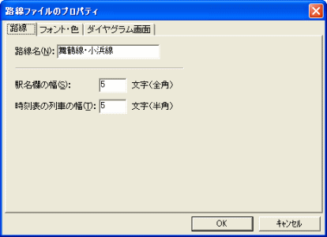
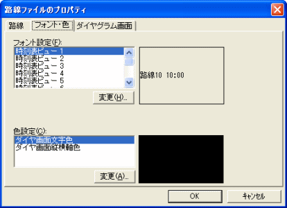
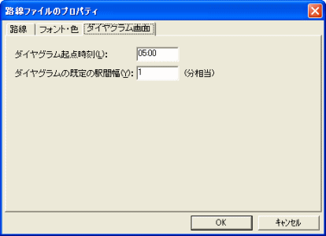

路線ファイルのプロパティを設定します。
このダイアログは、[路線],[フォント・色],[ダイヤグラム画面] の、３つのページで構成されます。

[路線名]
路線の名前を設定してください。
参照：『2.1. 基本的な使い方』の『2.1.2.2 路線名を設定』
[駅名欄の幅]
『駅ビュー』・『時刻表ビュー』・『ダイヤグラムビュー』の駅名欄の幅を指定してください。単位は、全角文字での文字数です。
この駅名欄の幅を変更することができます。この値を増やすことにより、より長い駅名を表示することができます。
最大は２９です。
[時刻表の列車の幅]
『時刻表ビュー』での列車の幅を指定してください。単位は、半角文字での文字数です。
範囲は4〜6です。

[フォント設定]
時刻表・ダイヤグラムに使用するフォントを設定できます。
以下のいずれかを選択して、[変更...] ボタンを押してください。[フォント]ダイアログが開きます。
[フォント]ダイアログでフォントを選択して[OK]を押してください。フォントを変更できます。
※『時刻表ビュー』は、列車時刻以外のテキスト(駅名など)には、『時刻表ビュー 1』と『時刻表ビュー 縦書き』のフォントを使います。
[色設定]
ダイヤグラムに使用する色を設定できます。
『ダイヤ画面文字色』・『ダイヤ画面縦横軸色』のいずれかを選択して、[変更...] ボタンを押すと、[色の設定]ダイアログが開きます。[色の設定]ダイアログで色をを選択して[OK]を押すことにより、色を変更できます。

[ダイヤグラム起点時刻]
ダイヤグラムの左端の時刻を指定してください。
"0:00" 〜 "23:59" の範囲で指定できます。
[ダイヤグラムの既定の駅間幅]
ダイヤグラムの既定の駅間幅を、分単位で指定してください。
ダイヤグラムビューの駅間幅（駅間の上下の高さ)は、駅間の『駅間最小所要秒数』をもとに決まります。しかし、列車の設定されていない駅間では、ダイヤグラムビューの駅間幅はここで指定した値になります。
範囲は１〜30までです。１を指定すると、列車の設定されていない駅間での駅間幅は、駅間最小所要時分１分の駅間と同じ幅になります。
参照：ダイヤグラムの既定の駅間隔